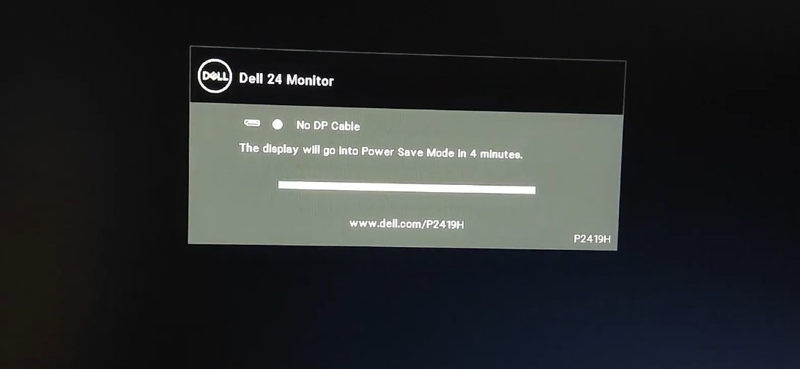
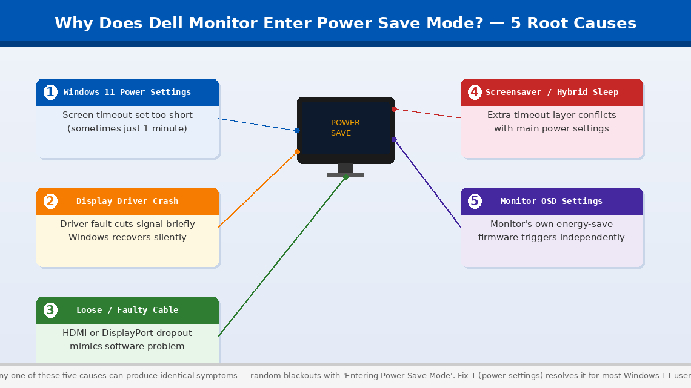
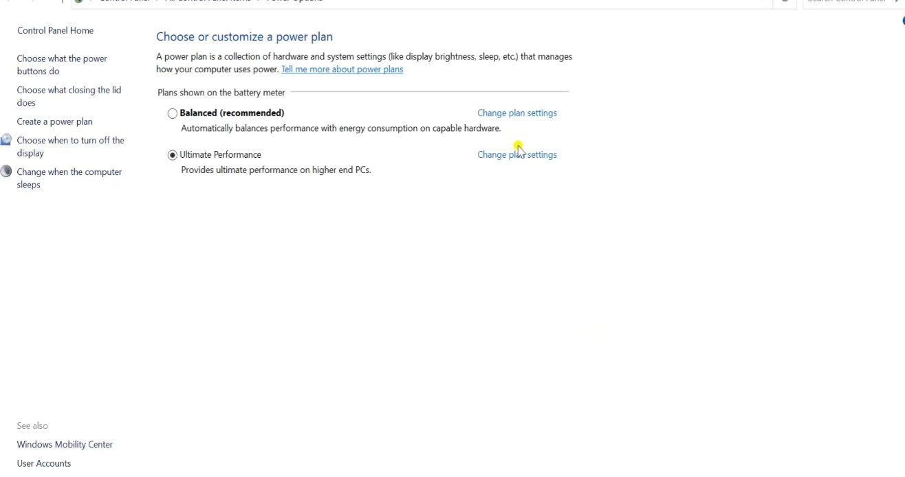
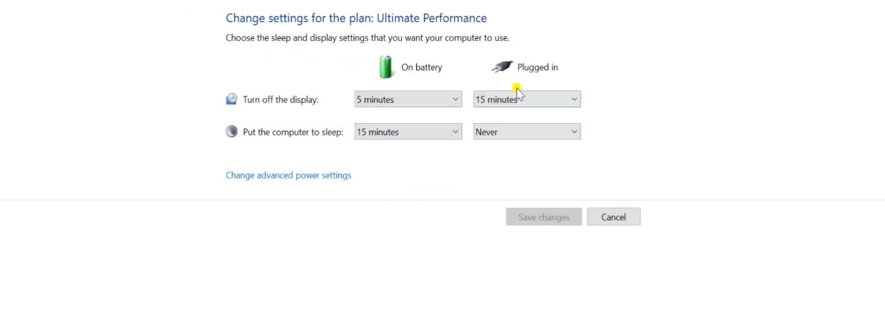
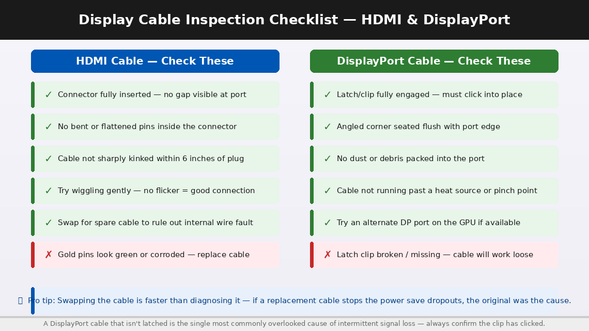
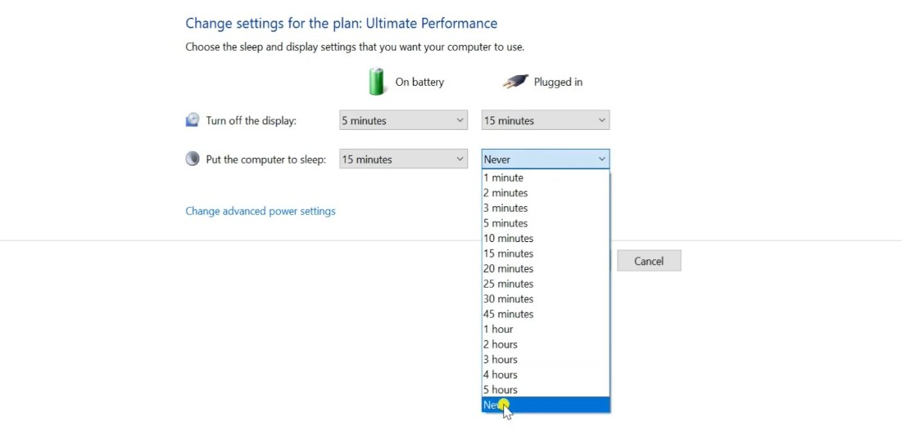

Dell Monitor Going Into Power Save Mode: Common Causes and Fixes
A Dell monitor dropping into power save mode mid-use means it's lost its signal from the PC. The monitor itself is working — it's responding correctly to a missing signal. The cause is more often than not a loose cable connection, a GPU that's gone to sleep, or a display settings conflict after a Windows update. Start with the cable.
This guide cuts straight to what actually works, starting with the fastest solutions first.
What Does “Entering Power Save Mode” Mean?
The honest answer, “Entering Power Save Mode” means your Dell monitor has stopped receiving a valid video signal from your computer — and in the absence of that signal, it has switched itself off to conserve power.
Your monitor doesn’t decide independently when to sleep. It responds to what your graphics card is — or isn’t — sending it. When a valid video signal is present, the monitor stays on and displays it. When the signal disappears or degrades, the monitor waits briefly and then enters power save mode until the signal returns.
The problem is that “no signal” can happen for several completely different reasons, and Windows 11 makes several of them significantly more likely than previous Windows versions:
- Windows 11 power settings are aggressively turning off the display. Windows 11’s default power plan is set to turn the display off after a very short idle period — sometimes as little as 1–2 minutes — and a setting buried three levels deep in the power options can cause it to happen even when the computer is not idle.
- The display driver has crashed or entered a fault state. Windows 11 handles graphics drivers differently from Windows 10, and driver crashes — which Windows recovers from silently — briefly cut the signal to the monitor, triggering power save mode.
- The physical cable connection is loose or degraded. An HDMI or DisplayPort cable that is slightly loose, has a bent pin, or is simply reaching the end of its functional life can cause intermittent signal dropout that perfectly mimics a software problem.
- Windows 11’s screensaver or hybrid sleep settings are conflicting with the display timeout, causing the screen to go dark at unpredictable intervals that don’t correspond to any single setting.
- The monitor’s own firmware or auto-detection settings are interpreting momentary signal variations as a full disconnect and entering power save mode more aggressively than necessary.
In most cases, the cause is Windows 11’s power settings or the display cable — both completely fixable at home.


Tools You’ll Need
Everything you need is either already on your computer or in the box your monitor came with:
- Your Windows 11 computer and Dell monitor
- The original display cable (HDMI or DisplayPort — have a spare if possible)
- About 15–20 minutes of your time
- Administrator access on your Windows 11 account
No screwdrivers, no multimeters, no technical background required.
Step-by-Step Fixes (Ranked by How Often They Work)
Start here and only continue if the issue isn't resolved. Fix 1 or Fix 2 resolves this for most people.
Windows 11’s default power plan is more aggressive about turning off the display than most users realise. The setting that controls when the screen goes dark is separate from the sleep setting, and on some Windows 11 configurations — particularly after a feature update — it can reset to a very short timeout without warning.
- Click the Start menu and open Settings (the gear icon).
- Go to System > Power & Sleep.
- Under the Screen section, find “When plugged in, turn off my screen after” — if it reads 1 minute, 2 minutes, or even 5 minutes, this is almost certainly your entire problem.
- Change this to “Never” if power save mode is happening while you’re actively using the computer, or to a longer interval (30 minutes or 1 hour) if you simply want the screen to stay on longer during inactivity.
- Check the Sleep setting directly below — set this to “Never” or a longer interval as well. Sleep and screen-off are controlled separately, and having them set to different short intervals causes unpredictable blanking behaviour.
- Settings save automatically — use your computer normally for 15–20 minutes and observe whether the power save mode recurs.

Windows 11 has an additional layer of display timeout that operates independently of the main power settings: the screensaver. A screensaver set to activate after a short period — particularly one set to blank the screen rather than display an animation — can look identical to a hardware power save event from the monitor’s perspective.
- Press Windows key + R, type desk.cpl, and press Enter — or right-click the Desktop and select “Personalise.”
- Click Lock Screen, then scroll down and select Screen Saver.
- In the Screen Saver Settings window, set the screensaver dropdown to “(None)” and click Apply.
- Now address Hybrid Sleep: open Settings > System > Power & Sleep > Additional power settings (or search “Edit power plan” in the Start menu).
- Click “Change plan settings” next to your active plan, then “Change advanced power settings.”
- In the Advanced Settings tree, expand Sleep > Allow hybrid sleep and set it to Off for both battery and plugged-in modes.
- Also expand Display > Enable adaptive brightness and set it to Off if present — adaptive brightness can cause sudden dimming that the monitor interprets as a signal loss.
- Click Apply > OK, then restart your computer to apply all changes.

If the power settings are correct and power save mode still occurs randomly — especially if it happens even while you’re actively moving the mouse or typing — a failing cable is the next most likely cause. HDMI and DisplayPort cables degrade over time, and a cable with a loose connector or a damaged internal conductor can drop the signal intermittently in a way that looks exactly like a software problem.
- Power the computer fully off.
- At the back of your PC, locate the display cable — either HDMI (trapezoidal connector) or DisplayPort (a connector with one angled corner).
- Unplug the cable from both ends — the monitor end and the graphics card end.
- Inspect both connectors and both ports carefully with a light source: look for bent or pushed-in pins, debris packed into either port, and any visible kinks or damage near the connectors.
- If the connector has screws or latching clips, ensure they were previously engaged — a DisplayPort cable that isn’t latched can work loose from vibration alone.
- Reconnect both ends firmly, engaging any locking mechanism fully.
- If you have a spare cable of the same type, swap it out entirely and test with the replacement. If the power save mode stops, the original cable was the cause.
- Also try a different port on your graphics card if one is available — if you’re using HDMI Port 1, try HDMI Port 2 or switch to DisplayPort.

Windows 11 updates graphics drivers automatically — and a driver update that introduced a bug, or a driver version that doesn’t interact well with your specific Dell monitor model, can cause repeated signal dropout events that trigger power save mode. Rolling back to a previous driver version — or updating to a newer one — resolves this more often than most people expect.
- Right-click the Start button and select Device Manager.
- Expand Display Adapters in the device list.
- Right-click your graphics adapter (Intel Iris Xe, NVIDIA GeForce, AMD Radeon, or similar) and select Properties.
- Click the Driver tab. Note the current driver version and date.
- Click “Roll Back Driver” — if this button is greyed out, there is no previous version stored; skip to the update step. If available, click it and follow the prompts.
- If Roll Back is unavailable, click “Update Driver” > “Search automatically for updated drivers” and allow Windows to find the latest version.
- For the most reliable driver update, go directly to your graphics card manufacturer’s website:
- NVIDIA: nvidia.com/drivers
- AMD: amd.com/support
- Intel (integrated graphics): intel.com/content/www/us/en/support/detect.html
- Download and install the latest recommended driver for your graphics card model.
- Restart your computer after installation completes, then monitor for 30–60 minutes of normal use.
Dell monitors have their own internal firmware and auto-detection settings — controlled through the On-Screen Display (OSD) menu accessible via the physical buttons on the monitor itself. An incorrectly configured energy-saving mode within the monitor’s own menu can cause it to enter power save mode on its own initiative, independent of what Windows is doing.
- While the monitor is displaying an image (not in power save mode), press the Menu button on the monitor’s control panel — usually on the bottom edge or right side of the monitor bezel.
- Navigate to Others or Other Settings in the OSD menu (exact label varies by Dell model).
- Look for “Energy Smart,” “Power Button LED,” or “Power Save Mode” settings and ensure they are set to your preference — some Dell monitors have their own independent display timeout.
- Navigate to Factory Reset or Reset All Settings within the OSD menu and select it. This returns the monitor’s firmware settings to their original defaults, clearing any misconfigured setting causing aggressive power save behaviour.
- Exit the OSD menu and observe the monitor’s behaviour over the next 30 minutes.
Some Windows 11 feature updates — particularly the 22H2 and 23H2 builds — introduced a known issue where USB devices connected to the computer can interrupt the display signal when their power state changes. If your Dell monitor is connected via a USB-C cable or if you have USB hubs connected, this is worth investigating.
- Open Device Manager (right-click Start > Device Manager).
- Expand Universal Serial Bus controllers.
- Right-click each USB Root Hub entry, select Properties, and click the Power Management tab.
- Uncheck “Allow the computer to turn off this device to save power” for each USB Root Hub.
- Click OK and repeat for all USB Root Hub entries in the list.
- Go to Settings > Windows Update > Advanced Options > Optional Updates — install all available driver updates and restart.
- Check Settings > Windows Update for any pending feature updates and install them — Microsoft has issued patches specifically addressing display signal and power save mode bugs in several Windows 11 builds.

When to Call a Professional
The Dell monitor power save mode issue is in nearly every case a software or cable problem that resolves with the fixes above. But there are situations where the problem has moved beyond what these steps can address:
- The monitor enters power save mode immediately at startup, before Windows has even loaded the login screen. This means the graphics card is not sending any signal at all during POST — indicating a possible GPU failure, a failed PCIe slot, or a dead graphics card port. Test with a different monitor to confirm whether the issue follows the monitor or stays with the PC.
- The monitor displays power save mode even when connected to a completely different, known-working computer. If the same behaviour appears on another system, the fault is in the monitor’s internal power management board — a hardware repair requiring a Dell service centre.
- The power save mode is accompanied by graphical artefacts — flickering, coloured lines, pixel noise, or corruption visible for a moment before the screen goes black. These symptoms together point to a failing GPU rather than a software or cable issue.
- You’ve replaced the cable, updated the driver, and corrected all power settings — and the problem persists on a single specific monitor. Dell offers a 3-year Advanced Exchange warranty on most business monitors and a 1–3 year warranty on consumer models, with on-site exchange available in many regions.
To reach Dell support:
- India: dell.com/support — Customer care: 1800-425-4051 (toll-free)
- US: dell.com/support — Phone: 1-800-624-9896
Have your monitor’s Service Tag ready — it’s printed on the label on the back of the monitor and gives Dell instant access to your exact model, purchase date, and warranty status.
Quick Summary
| Fix | Difficulty | Time Needed |
|---|---|---|
| Change Windows 11 screen timeout to “Never” | Very Easy | 2 minutes |
| Disable screensaver and hybrid sleep | Easy | 5 minutes |
| Reseat or replace the display cable | Easy | 5 minutes |
| Update or roll back the display driver | Moderate | 15 minutes |
| Reset Dell monitor to factory defaults via OSD | Very Easy | 3 minutes |
| Disable USB hub power management | Easy | 10 minutes |
Start at the top. For the nearly all of Windows 11 users seeing this problem, the screen timeout setting in Fix 1 is set to something embarrassingly short — sometimes one minute — and changing it to Never makes the problem vanish immediately. Work through each step calmly and you’ll have your monitor staying on reliably before the hour is out.
Still seeing the power save mode after trying all six fixes? The single most diagnostic test you can do is connect your Dell monitor to a different computer entirely. If it behaves perfectly on another machine, the problem is in Windows. If it goes into power save mode on the second machine too, the monitor itself needs service — and Dell’s warranty exchange programme is surprisingly straightforward to use.